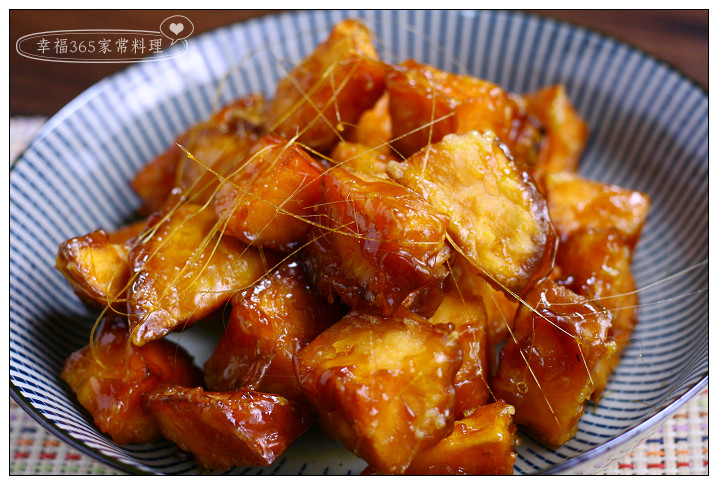
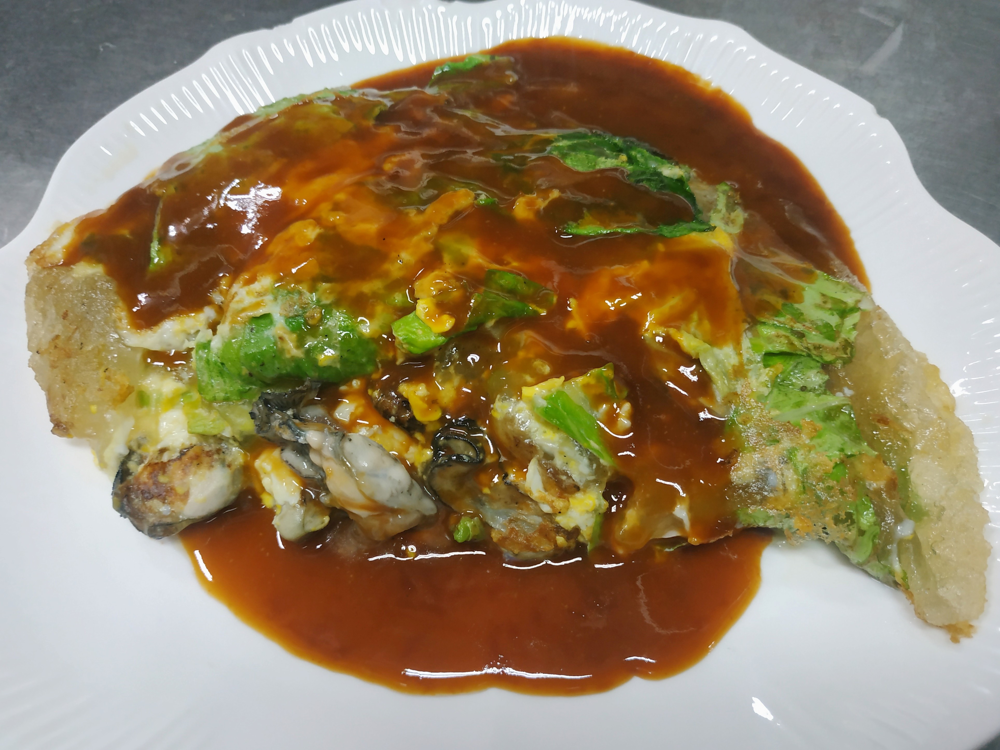
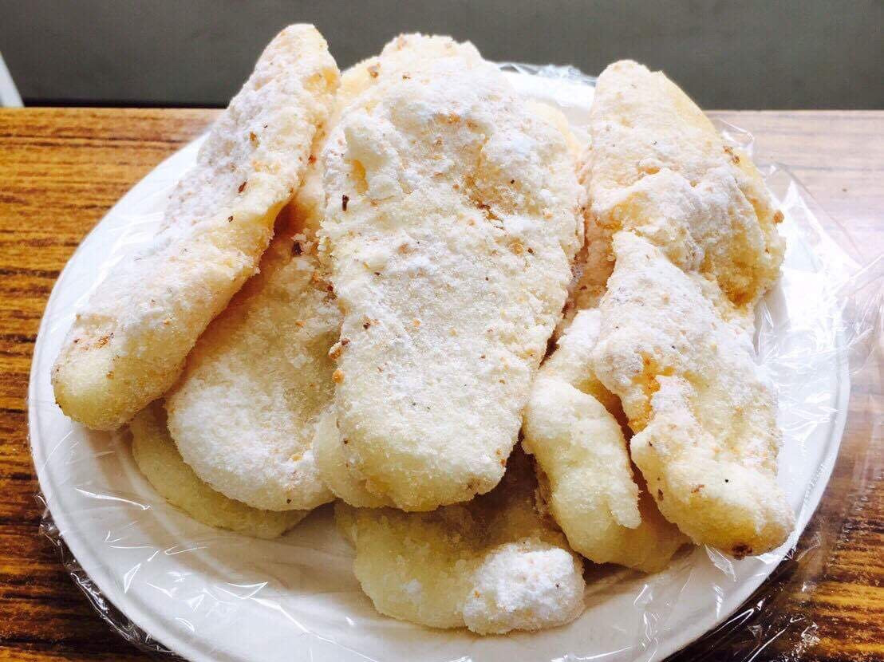

以為網站架設很簡單，有時候會覺得為什麼有些網站設計的那麼難用。
直到這學期有幸上到網站設計課程才知道原來設計網站那麼艱難。
而且我們這個網站還只是簡易初階的。
那麼簡單的用起來就那麼複雜麻煩，很難想像我們所看到的網頁或網站是消耗工程師們多少的時間少心思去做設計。
並且要通順人性化。
  
拔絲地瓜介紹 雞肉飯介紹 蚵仔煎介紹 白糖粿介紹
練習用音樂、影片
Your browser does not support the audio element.